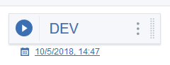

Managing pipelines
Add applications and jobs to your pipeline, and add or modify stages.
You can add environments, or stages, at any time and rearrange them as needed. Each application that you add to a pipeline is inserted onto a separate row below the last application. As you add apps and jobs to stages, tasks are added to the associated deployment plan in the order that they appear in the pipeline.
To modify a pipeline, complete the following steps:
- On the Pipeline detail page, click Add Environment to create an environment, or stage. Drag the stage to a new location in the pipeline. You can re-order the stages except for the first stage, Input. To rename the stage, select Edit environment from the stage context menu.
- To map an UrbanCode Deploy application environment to the stage, complete the following steps:
- For the application where you want to add the environment, click , and then select Manage logical environment.
- On the Map app environments to logical environment window, select an environment, and then click Save. The environment is added to the stage.
- To change the mapped environment, select Edit application environment.
- To delete the environment, select Delete.
- Click View deployment plan on the stage context menu fo view the deployment plan associated with the stage The deployment plan detail page is displayed. As you add apps and jobs to the pipeline, associated tasks are inserted into the plan. You can also add tasks directly to the plan. For example, you might add a DRA task to the top of the plan to ensure deployments can only start after the associated DRA tests are satisfied.
- Click Schedule deployment to schedule a deployment for a stag, and then specify the date and time.
-
To add the stage to a release, complete the following steps:
- Click Join release for the stage that you want to add to a release.
-
On the Map app environments to logical environment window, select a release, and then click Save. The release is added to the stage, as shown in the following figure.

To view the release, click the release link.
-
Click Delete to delete an app or job, and then confirm the deletion by entering the name of the application. The application is removed from the pipeline along with all apps and jobs defined for it.
-
Click Add app to add an application to the pipeline, and then, on the Add apps window, select the application type. Depending on the type, complete one of the following options:
- If you select Jenkins, enter a name for the application, and then click Save.
- If you select UrbanCode Deploy, select an UrbanCode Deploy application, and then click Continue. Next, select a process, and then click Save. The application is added to the pipeline on a new row. If you selected multiple applications, each has its own row.
Run a deployment for a pipeline stage.
Parent topic: Pipelines